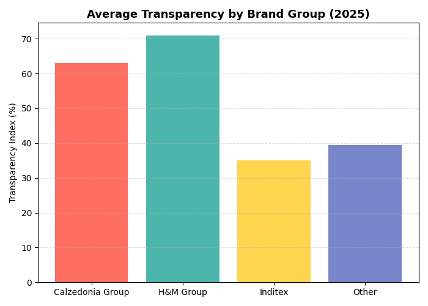
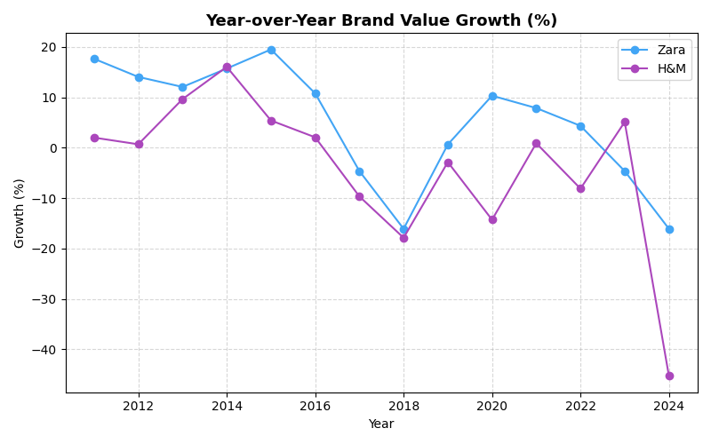
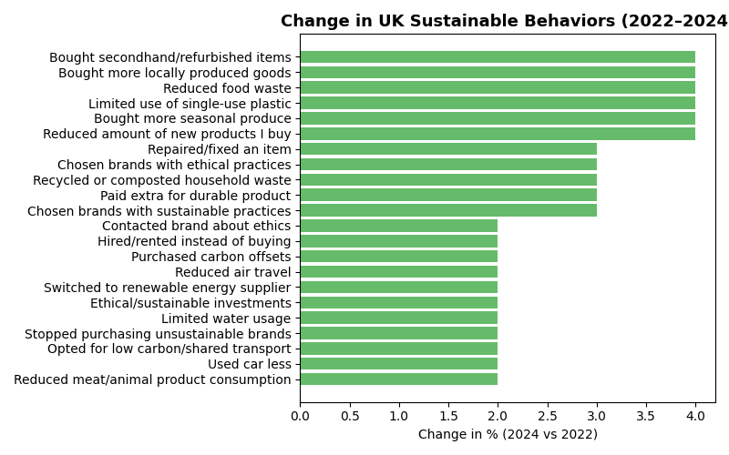
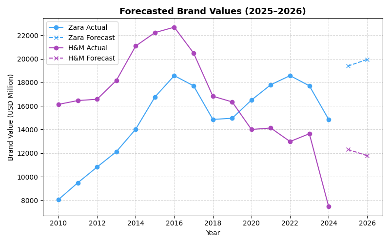

1️⃣ Descriptive Analytics – Current Landscape
These visuals summarize transparency, brand value, consumer behavior, and textile waste patterns shaping Europe’s sustainable fashion landscape.
Transparency Index (2025)

Global Brand Value (H&M vs Zara 2010–2024)

Sustainable Behaviors (UK 2022–2024)

EU Textile Waste per Person (2016)

2️⃣ Advanced Insights – Growth & Behavior Trends
Analyzing group transparency, year-over-year growth, behavioral change, and future forecasts.
Average Transparency by Brand Group
Year-over-Year Growth (Zara vs H&M)
Change in UK Sustainable Behaviors
Forecasted Brand Values (2025–2026)
3️⃣ Diagnostic & Predictive Insights
The European sustainable fashion sector is driven by strong transparency reporting and consumer pressure for eco-conscious practices. Brands like H&M lead through clear sustainability communication, while Zara’s fast adoption of technology enhances adaptability. Predictive trends indicate an upward trajectory for sustainable consumption and investments in circular systems by 2026.
4️⃣ Strategic Recommendations
- Invest in Transparency: Consumers reward brands that openly report sustainability metrics and ethical sourcing.
- Adopt Circular Models: Extend product lifecycles through recycling, resale, and take-back programs.
- Educate Consumers: Use marketing to highlight the positive impact of sustainable purchases.
- Leverage Technology: Implement blockchain and AI for traceability, reducing waste and greenwashing.
- Collaborate Across Supply Chains: Partner with suppliers and governments to meet EU sustainability goals.
- Monitor Regulations: Anticipate upcoming EU sustainability directives to remain compliant and competitive.